X1286–X1311¶
Collings Transforms
X1286–X1311 (Collings Transforms) — 14 representative centers (from 26 in collection) constructed on acute reference triangle \((a, b, c) = (5, 6, 7)\) with unit baseline AB = \(1\).¶
Group Preamble — Collings Transforms: 1286-1311
If ABC is a triangle, P is a point, and A', B', C' are the reflections of A, B, C in P, then the circumcircles of triangles AB'C', A'BC' and A'B'C concur at a point Q on the circumcircle of triangle ABC. The transformation T given by Q = T(P) was described by
S. N. Collings, “Reflections on reflections 2”, Mathematical Gazette 1974, page 264.
It was further discussed by Floor van Lamoen and Darij Grinberg, and coordinates were found by Barry Wolk; see Hyacinthos #4547, #4548, #6469, #6538, #6546, #6560. Paul Yiu noted that T(P) is the point, other than A, B, C, in which the circumconic centered at P meets the circumcircle of triangle ABC (#4548).
If P =\(x : y : z\) (trilinears), then Q =\(f(a,b,c) : f(b,c,a) : f(c,a,b)\), where
\(f(a,b,c) = 1/[bz(ax + by - cz) - cy(ax + cz - by)]\).
For given Q, the set of points P satisfying T(P) = Q is a conic. Examples follow:
Bernard Gibert (4/02/03) identified T(P) as the trilinear pole of the line of X6 and the X2-Ceva conjugate of P. He identified the locus of P as the rectangular hyperbola that circumscribes the medial triangle and has center W given by the vector equation 4X2W = X2Q. The anticomplement of this hyperbola is the rectangular ABC-circumhyperbola whose center is the complement of Q. Thus, referring to examples given above:
X1286COLLINGS TRANSFORM OF X22
X1286 lies on the circumcircle.
X1287COLLINGS TRANSFORM OF X23
X1287 lies on the circumcircle.
X1288COLLINGS TRANSFORM OF X24
X1289COLLINGS TRANSFORM OF X25
